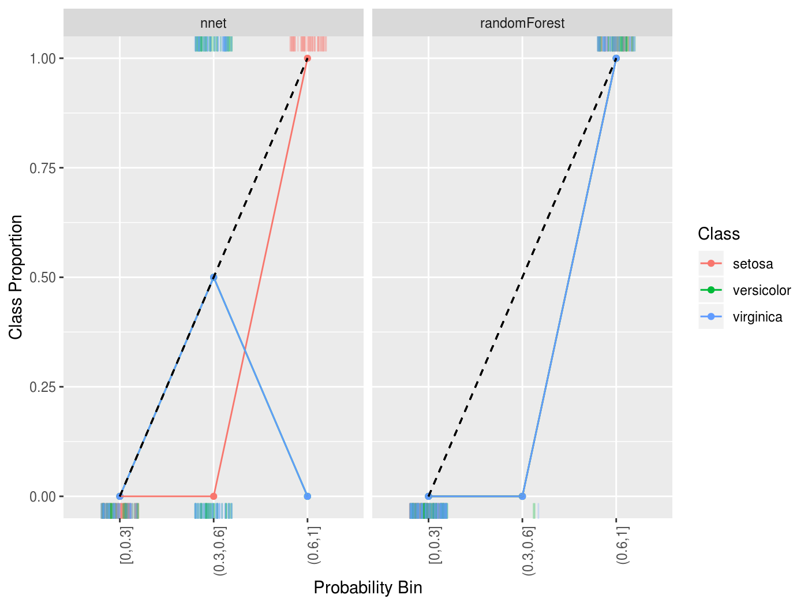

Classifier Calibration
Source:vignettes/tutorial/classifier_calibration.Rmd
classifier_calibration.RmdA classifier is “calibrated” when the predicted probability of a class matches the expected frequency of that class. mlr can visualize this by plotting estimated class probabilities (which are discretized) against the observed frequency of said class in the data using generateCalibrationData() and plotCalibration().
generateCalibrationData() takes as input Prediction(), ResampleResult(), BenchmarkResult(), or a named list of Prediction() or ResampleResult() objects on a classification (multiclass or binary) task with learner(s) that are capable of outputting probabiliites (i.e., learners must be constructed with predict.type = "prob"). The result is an object of class CalibrationData (generateCalibrationData()) which has elements proportion, data, and task. proportion gives the proportion of observations labelled with a given class for each predicted probability bin (e.g., for observations which are predicted to have class “A” with probability \((0, 0.1]\), what is the proportion of said observations which have class “A”?).
lrn = makeLearner("classif.rpart", predict.type = "prob")
mod = train(lrn, task = sonar.task)
pred = predict(mod, task = sonar.task)
cal = generateCalibrationData(pred)
cal$proportion
## Learner bin Class Proportion
## 1 prediction (0.1,0.2] M 0.1060606
## 2 prediction (0.7,0.8] M 0.7333333
## 3 prediction [0,0.1] M 0.0000000
## 4 prediction (0.9,1] M 0.9333333
## 5 prediction (0.2,0.3] M 0.2727273
## 6 prediction (0.4,0.5] M 0.4615385
## 7 prediction (0.8,0.9] M 0.0000000
## 8 prediction (0.5,0.6] M 0.0000000The manner in which the predicted probabilities are discretized is controlled by two arguments: breaks and groups. By default breaks = "Sturges" which uses the Sturges algorithm in graphics::hist(). This argument can specify other algorithms available in graphics::hist(), it can be a numeric vector specifying breakpoints for base::cut(), or a single integer specifying the number of bins to create (which are evenly spaced). Alternatively, groups can be set to a positive integer value (by default groups = NULL) in which case Hmisc::cut2() is used to create bins with an approximately equal number of observations in each bin.
cal = generateCalibrationData(pred, groups = 3)
cal$proportion
## Learner bin Class Proportion
## 1 prediction [0.000,0.267) M 0.08860759
## 2 prediction [0.267,0.925) M 0.51282051
## 3 prediction [0.925,1.000] M 0.93333333generateCalibrationData() objects can be plotted using plotCalibration(). plotCalibration() by default plots a reference line which shows perfect calibration and a “rag” plot, which is a rug plot on the top and bottom of the graph, where the top pertains to “positive” cases, where the predicted class matches the observed class, and the bottom pertains to “negative” cases, where the predicted class does not match the observed class. Perfect classifier performance would result in all the positive cases clustering in the top right (i.e., the correct classes are predicted with high probability) and the negative cases clustering in the bottom left.

Because of the discretization of the probabilities, sometimes it is advantageous to smooth the calibration plot. Though smooth = FALSE by default, setting this option to TRUE replaces the estimated proportions with a loess smoother.

All of the above functionality works with multi-class classification as well.
lrns = list(
makeLearner("classif.randomForest", predict.type = "prob"),
makeLearner("classif.nnet", predict.type = "prob", trace = FALSE)
)
mod = lapply(lrns, train, task = iris.task)
pred = lapply(mod, predict, task = iris.task)
names(pred) = c("randomForest", "nnet")
cal = generateCalibrationData(pred, breaks = c(0, .3, .6, 1))
plotCalibration(cal)